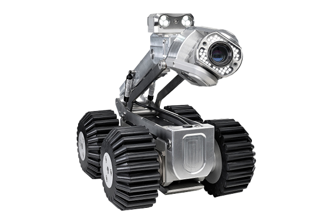
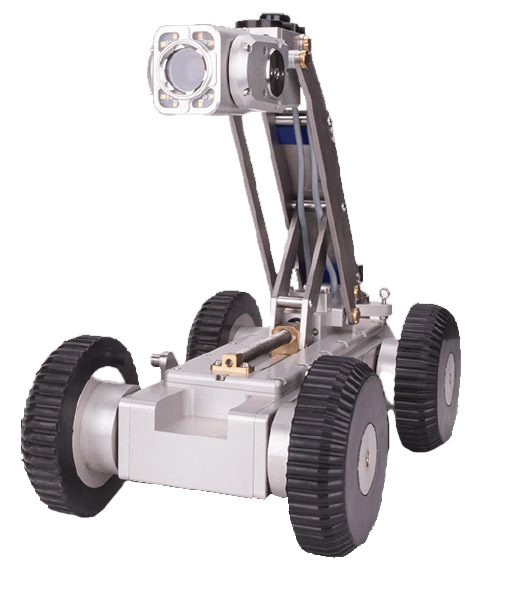
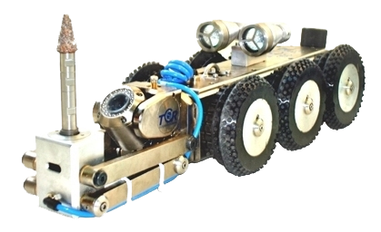
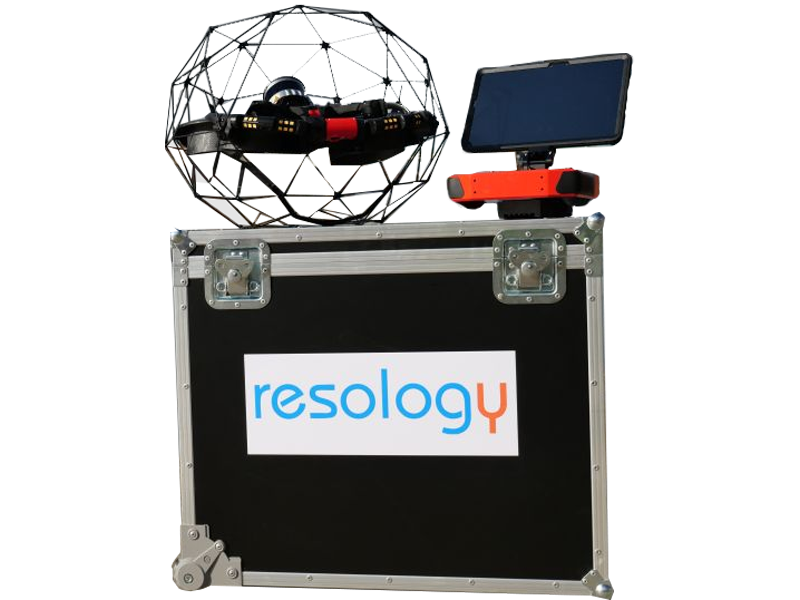

Ce site présente nos produits/services et fournit des informations importantes à nos visiteurs.

Fondée en 2001, RESOLOGY s'est érigée en tant que référence incontournable dans le domaine des chantiers d'assainissement. Dans un contexte où les normes relatives au contrôle des réseaux d'assainissement neufs sont en perpétuelle évolution, notre engagement indéfectible envers l'anticipation des besoins futurs se manifeste à travers des investissements substantiels en équipements de pointe, des programmes de formation rigoureux, et une participation active au sein du syndicat professionnel.

Notre démarche proactive vise à demeurer à l'avant-garde de l'industrie, prête à relever les défis posés par les nouvelles exigences de nos clients. Chez RESOLOGY, nous nous distinguons par notre quête incessante d'excellence, garantissant ainsi des solutions d'assainissement de qualité supérieure. En conjuguant expertise technique et engagement envers l'innovation, nous nous positionnons comme le partenaire privilégié pour répondre aux défis complexes de l'assainissement moderne.

Votre satisfaction demeure au cœur de notre mission. En choisissant RESOLOGY, vous optez pour une entreprise dynamique, compétente et résolument tournée vers l'avenir, prête à accompagner votre projet d'assainissement avec professionnalisme et excellence.
